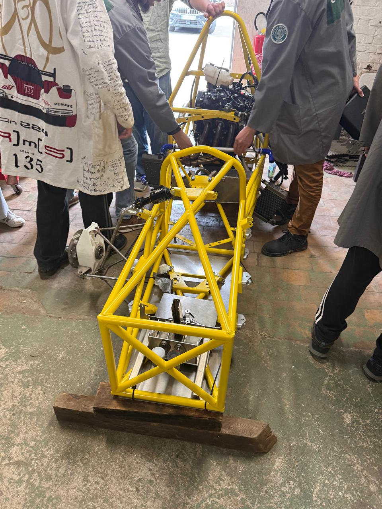
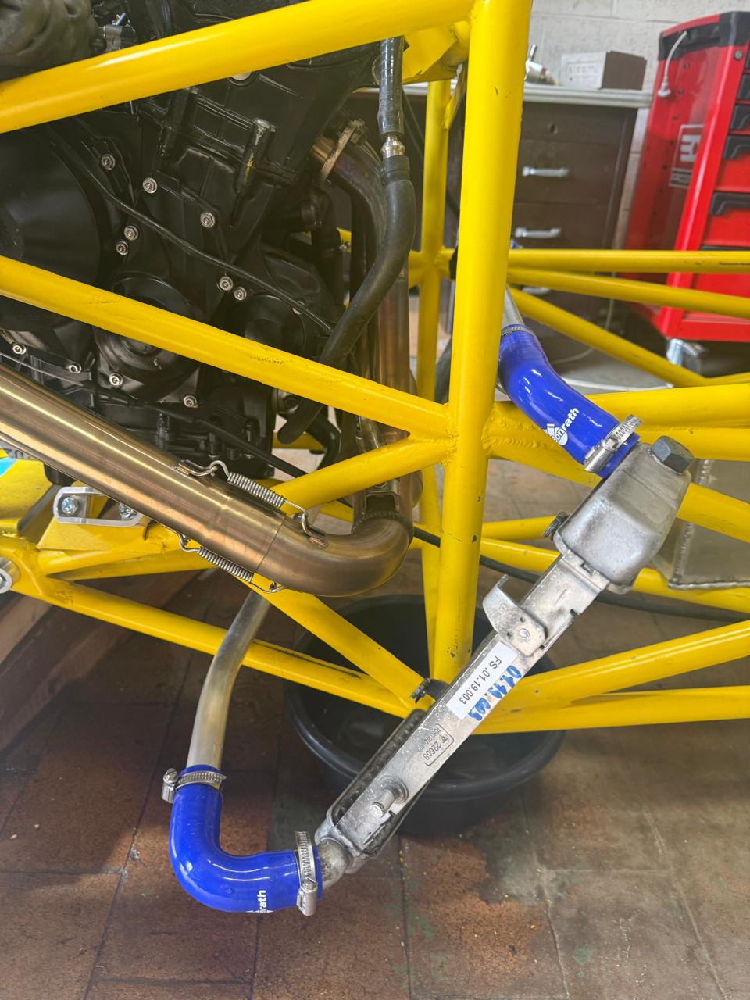

2026 · FORMULA STUDENT · HANDS-ON ENGINEERING
Formula Student AM
Working with an engineering team on the CAD design, machining and assembly of vehicle components, and on planning and distributing tasks.


Project overview
As a member of the Formula Student AM team in 2026, I participated in CAD, machining and assembly of parts and components, as well as task planning and distribution. The work provided hands-on exposure to engineering and coordination within a vehicle-building team.
Areas of involvement
CAD & component preparation
Participation in computer-aided design activities.
Machining & assembly
Participation in manufacturing and assembling vehicle parts and components.
Task coordination
Participation in planning and distributing team tasks.
Individual responsibilities are limited to the activities documented in the CV; no vehicle performance results are claimed here.